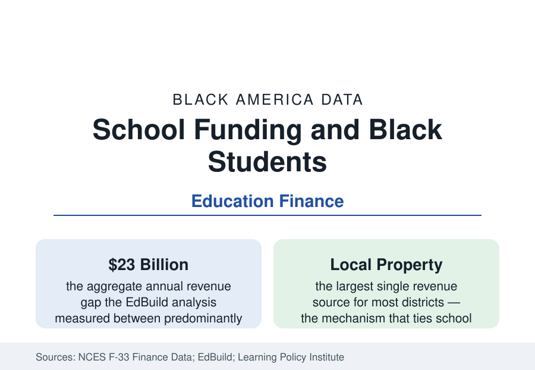

Black Education
School Funding in Majority-Black Districts: The Revenue Data
School districts serving mostly Black students receive thousands less per pupil than mostly White districts in the revenue data — a gap built by the funding formulas themselves.

Follow the money and the education data reorganize themselves. School districts in the United States raise roughly 45 percent of their revenue locally, overwhelmingly from property taxes — which means a district's budget is a direct function of the property wealth inside its borders, and the wealth data of this reference's census section therefore become an education input. The measured result, across several independent analyses of the federal finance data: districts serving predominantly Black and nonwhite students receive substantially less revenue per pupil than predominantly White districts — by thousands of dollars per child in the largest-gap states. This article reports the school finance data.
The Aggregate Gap
The most cited measurement is EdBuild's: comparing predominantly White school districts with predominantly nonwhite districts of similar enrollment, it found an aggregate revenue gap of $23 billion in a single school year — the predominantly nonwhite districts receiving less despite enrolling the same number of students, a difference averaging roughly $2,200 per pupil. The Education Trust's state-by-state analyses, using a different method (comparing the highest- and lowest-poverty districts and weighting for student need), find gaps of similar direction in most states, largest where local property wealth dominates and state equalization is weakest. Per-pupil spending is an input, not an outcome — the research literature debates its conversion rate into achievement — but the inputs purchased are concrete: the teacher salary schedules that determine who can be hired and retained, class sizes, course offerings, building condition, and the support staff whose ratios appear in the K-12 profile's data.
The Mechanism: Property, Boundaries, and Formulas
Three mechanisms manufacture the gap, all visible in the data. First, property wealth: district boundaries drawn around affluent enclaves concentrate taxable value, while majority-Black districts — urban cores and rural Black Belt counties alike — tax some of the thinnest property bases in their states at some of the highest rates. Second, boundary fragmentation: metropolitan areas splintered into many small districts sort wealth more completely than county-wide systems do, which is why the funding literature treats the South's county-district structure as an accidental equalizer and the Northeast and Midwest's fragmentation as a gap engine. Third, state formulas: every state runs an equalization formula intended to offset local wealth, and their adequacy is the variable — the states whose formulas most fully compensate produce the smallest gaps in the analyses, and several states' systems have been found by their own courts to underfund their high-need districts, litigation whose remedies reshape the tables state by state.
Federal Money and Its Limits
Federal revenue — roughly 8 to 10 percent of school budgets nationally — is the system's explicitly compensatory layer, above all Title I, which directs funds by child poverty counts. The finance data show its scale problem: Title I's per-pupil amounts are measured in hundreds of dollars against local gaps measured in thousands, and its allocation formulas spread it across nearly all districts rather than concentrating it where poverty concentrates. The pandemic relief appropriations were the exception that proved the rule's arithmetic: a one-time federal injection on the order of $190 billion across three laws, distributed substantially by Title I shares, temporarily gave high-poverty districts their largest budgets in history — spent under deadline on staffing, facilities, and learning recovery, and now expiring out of the revenue data, leaving the underlying formula gaps as the steady state.
What the Money Buys: The Input Trail
The finance-to-classroom trail is traceable in the federal datasets: revenue gaps convert to teacher salary gaps (majority-Black districts' average salaries trail by thousands, purchasing less experience in the labor market — the teacher profile's distribution follows), to counselor and nurse ratios, to advanced course offerings (the schools-and-courses civil rights data show majority-Black high schools offering calculus, physics, and computer science at lower rates), and to facilities, where the Government Accountability Office found majority-nonwhite districts' buildings in measurably worse condition on its inspection sample. None of this makes funding the whole of the outcome story — the literature is careful, and this article follows it — but the input side of the education production function is not a mystery variable: it is in the F-33 file, district by district, dollar by dollar.
Reading the Funding Data
School funding is where the census section's wealth tables enter the education section's outcomes: a property-tax system cannot help translating the housing wealth distribution into a school revenue distribution. The gap figures — $23 billion in aggregate, thousands per pupil at the extremes, a few hundred federal dollars against them — are the arithmetic of that translation, and the reform record (state formula rewrites, court orders, the occasional boundary consolidation) is the tracked countercurrent.
More in Black Education
Black Educational Attainment: High School Parity, the College Gap
About 89 percent of Black adults hold a high school diploma and one in four holds a bachelor's degree or higher — the attainment ladder, the college completion gap, and the generational trend.
Historically Black Colleges and Universities: Enrollment and Degrees
More than 100 HBCUs enroll roughly 290,000 students and award about one in six Black bachelor's degrees — an outsized share from a small sector. The federal education data.
Black College Enrollment: 2.4 Million Students
About 2.4 million Black students are enrolled in American colleges — nearly two-thirds of them women. The NCES enrollment data by sector, level, and trend.
Source: National Center for Education Statistics, F-33 school finance data; EdBuild and Learning Policy Institute funding analyses; Education Trust funding gap studies.